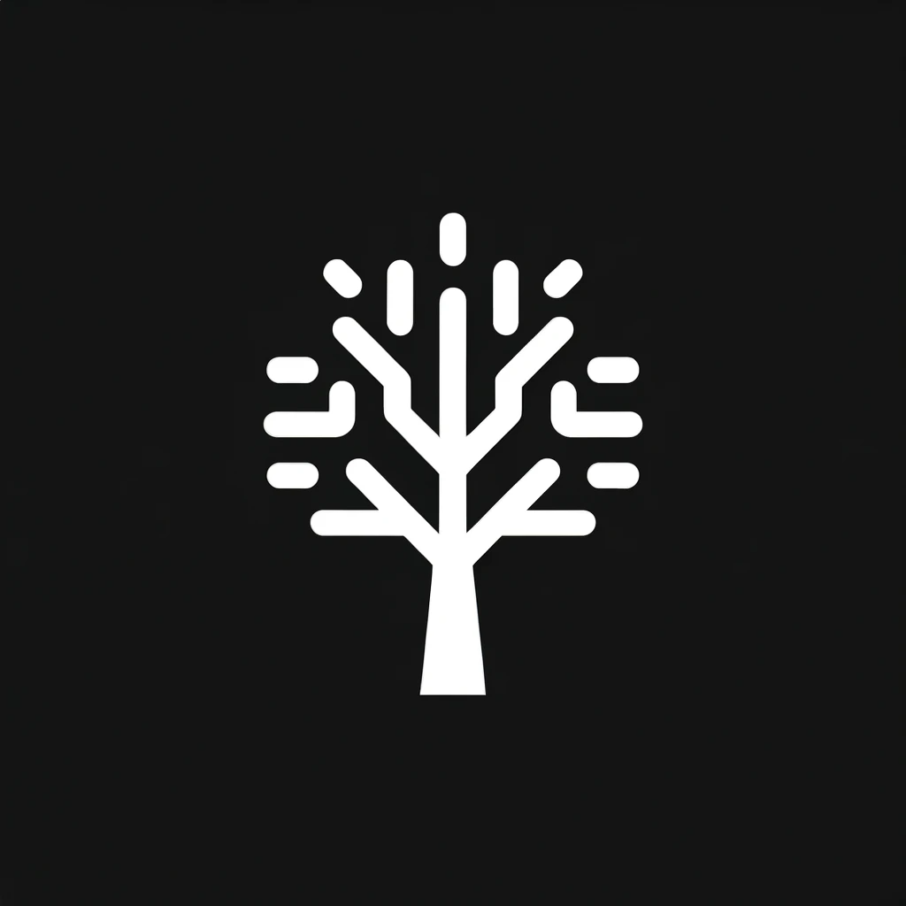

How to Make a Minimalist Presentation Link to heading
Do you struggle to keep your presentations on a single visual theme? I personally waste a lot of time when making presentations fussing over the small visual details to ensure continuity. Then someone pointed out that if you make you presentations mostly black and white, with maybe splashes of colour to show emphasis can be a powerful way of visually building a presentation. There was always one roadblock to this approach for me however - where to get any icon of a similar design for free on the internet. ChatGPT is the obvious go to so I put it to work making some images for my presentation. By leveraging AI, you can generate a suite of matching visuals that can transform your presentation. Here’s how I did it for my latest project.
Step 1: Define Your Theme Link to heading
Start by choosing your base colors. Black and white are perfect for the background and primary content.
Step 2: Add Splashes of Color Link to heading
Use color sparingly to draw attention to key points. This could be for your call to action, important statistics, or to highlight changes in topics.
Step 3: Generate Custom Icons Link to heading
This is where ChatGPT shines. Requesting icons in a specific style yields personalised results, like these:
Fig 1. Minimalist graph icon
 Fig 2. Stylized tree icon
Fig 3. Network-style brain icon
Step 4: Construct Your Slides Link to heading
With your custom icons, build your slides. Keep text to a minimum and let the visuals speak for you.
Step 5: Review and Refine Link to heading
Take a step back, review your slides, and refine as needed. Less is often more, so don’t be afraid to remove elements that don’t add value.
Conclusion Link to heading
Minimalist presentations can be powerful. By focusing on the essentials, you can create a memorable experience for your audience. And with AI-generated visuals, your presentations will always stand out.
Want to see the full presentation? Read the full article.